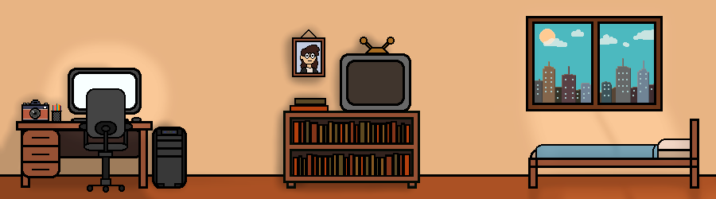

Meus Projetos
Desde que entrei no mundo da Ciência da Computação e criei o meu GitHub, eu desenvolvi alguns projetos para testar funcionalidades, colocar em prática o que aprendi na faculdade ou só me divertir com coisas do meu interesse. Os que estão aqui embaixo são os meus favoritos entre todos eles.

Window Surfer
Um jogo com temática Internetcore e Y2K, desenvolvido completamente em C e utilizando a biblioteca Raylib. Feito em conjunto com meu querido Rogreio.
KaoMotion
Um software para detecção de emoções faciais em imagens, vídeos ou transmissões ao vivo a partir do uso de uma webcam. Feito em conjunto com meu querido Rogreio.
SimED
Um simulador de Estruturas de Dados gamificado, com exemplos interativos e de fácil compreensão. Feito com Java em conjunto da biblioteca JSGE.
Desenhador
Um software de desenho digital com capacidade de salvar e carregar os desenhos feitos. Desenvolvido com Java em conjunto da biblioteca Java Swing.
Algoritmos de Ordenação
Um simulador de Algoritmos de Ordenação, com configurações para inserir valores eu escolhê-los aleatoriamente. Feito com Java em conjunto da biblioteca JSGE.
Parser Interativo
Um simulador de Parser em conjunto de um jogo interativo que utiliza as mecânicas dele. Feito com Java em conjunto da biblioteca JSGE.
Pesquisa e Extensão
Ao decorrer da minha vida acadêmica, atuei em bolsas de pesquisa, escrevi artigos científicos, organizei eventos em conjunto da minha instituição de ensino e participei de diversos projetos de extensão de auxílio à comunidade.